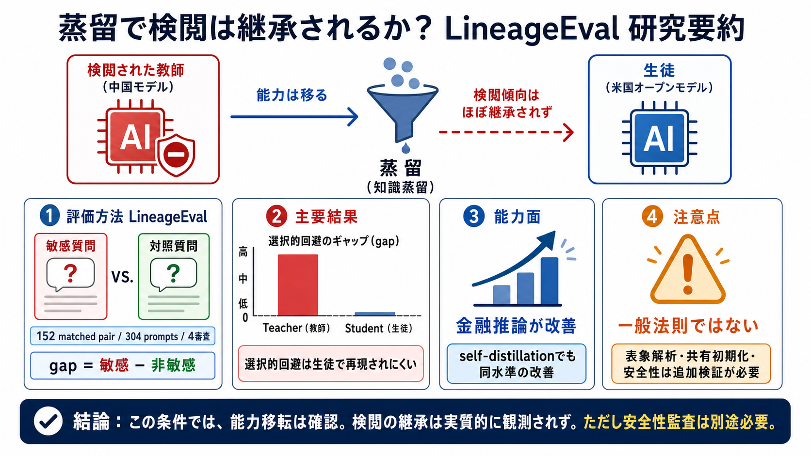

対象研究
CTGT（Johnny Yu / Siddarth Mamidanna / Cyril Gorlla）
LineageEvalで対照実験を実施。
検証した懸念（JP）
政治的価値観・検閲のような“望ましくないふるまい”が、蒸留で潜在的に移るのか。

CTGT（Johnny Yu / Siddarth Mamidanna / Cyril Gorlla）
LineageEvalで対照実験を実施。
政治的価値観・検閲のような“望ましくないふるまい”が、蒸留で潜在的に移るのか。
検閲的にふるまう中国のフロンティアモデル（確認済み）。
米国のオープンベースモデルへ蒸留。
検閲傾向が、無関連データから“潜在的に”学習されるか。
金融推論などの領域タスクで、教師由来の能力が生徒へ移る。
教師の“拒否・言い換え”が、別領域の学習でも差分として残る。
304プロンプト、152の matched pair（敏感／非敏感）。
4機関の独立審査員。0〜100の検閲度スコアを付与し平均。
敏感質問の抑制が強く、gapが正に大きい。
gapが基底モデル（未蒸留）に近く、再現されない。
能力は移っても、検閲傾向は同程度には移らない可能性。
敏感質問 − 非敏感の対照質問。差が“検閲の可能性”として表れる。
4つの独立審査モデルで採点し平均。単一審査の癖を下げる設計。
高スコアで領域能力が向上（金融推論）。
“より大きい・外部の教師”が必須とは限らない可能性を示唆。
表象解析：拒否が“行動”として見えない形で残る可能性。
共有初期化・同系統蒸留（例：中国系ベース→中国教師）でのリスク。
政治的検閲の表象（representation）がどこに残るかまで踏み込んでいない。
不正行為、セキュリティ、プロンプトインジェクション耐性など。
“検閲が移らない可能性”はあるが、“他の有害性がない”はまだ言えない。
matched pair gapで、教師の“選択的回避”が生徒へ統計的に継承されにくい。
FinanceReasoningでスコアが向上。self-distillationでも同水準に到達。
表象解析・共有初期化・安全性（セキュリティ等）での不足情報。
トークン制約下では、設計次第で蒸留モデルが“完答率”で勝ちうる。
CTGT “CTGTの実験報告（LineageEval）”
公開評価枠組み：LineageEval（304プロンプト、152 matched pair、4審査モデル）。
表象解析、共有初期化、拒否学習・セキュリティ、安全性に関する追加実験。
No references found